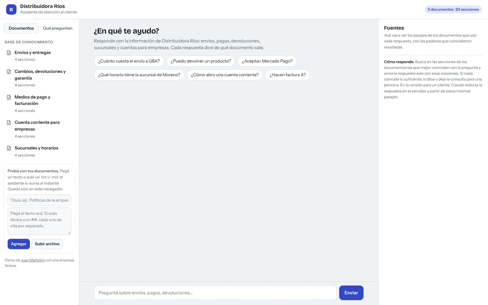
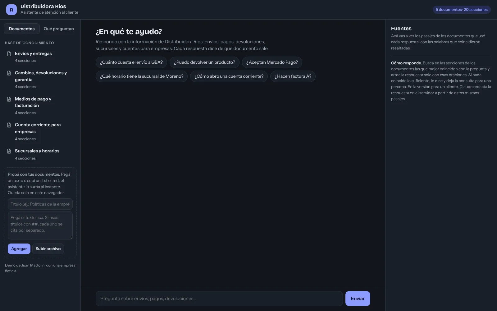
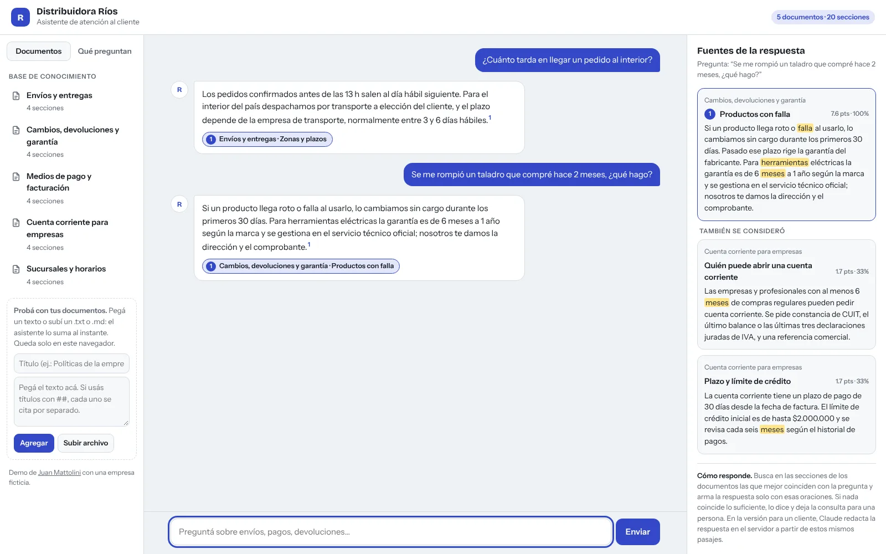
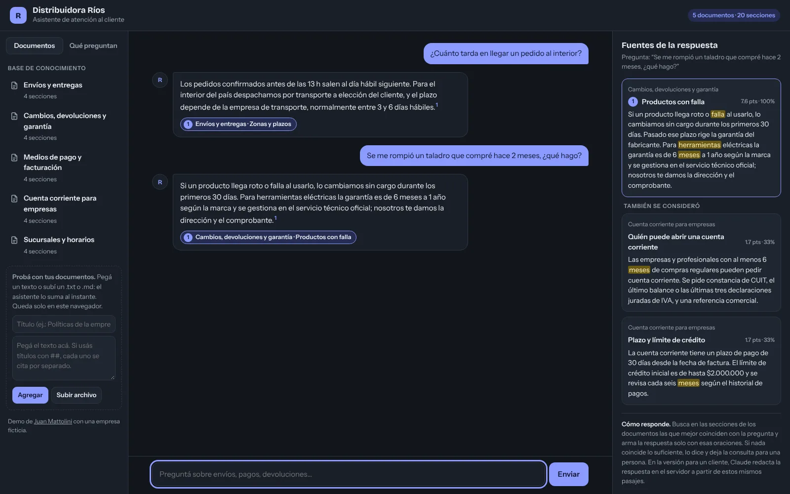
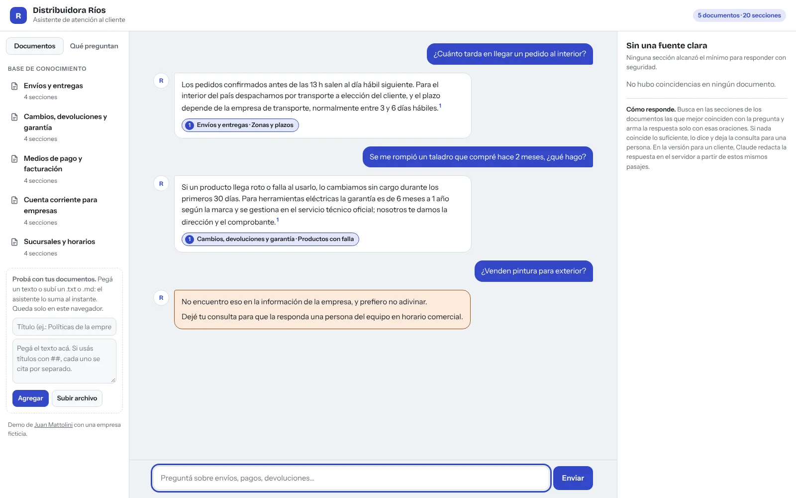
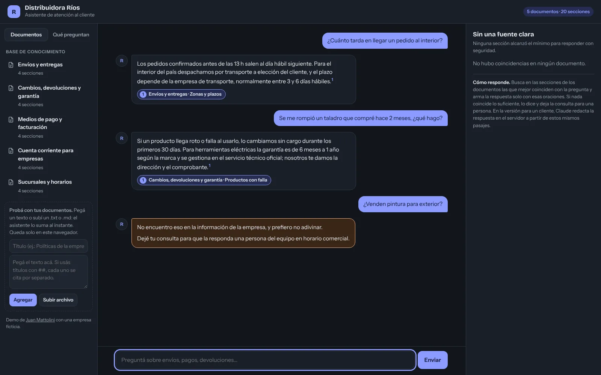
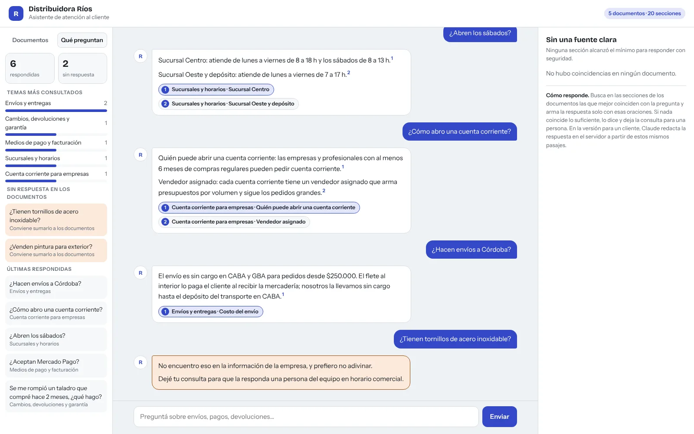
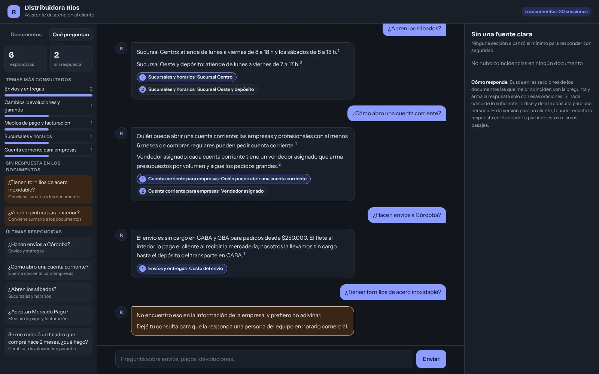
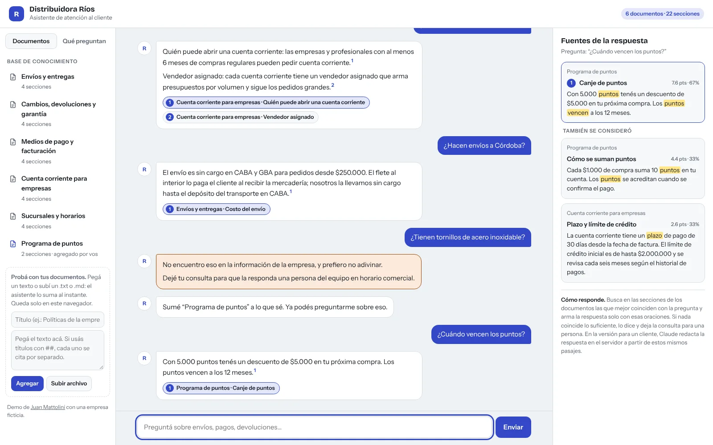
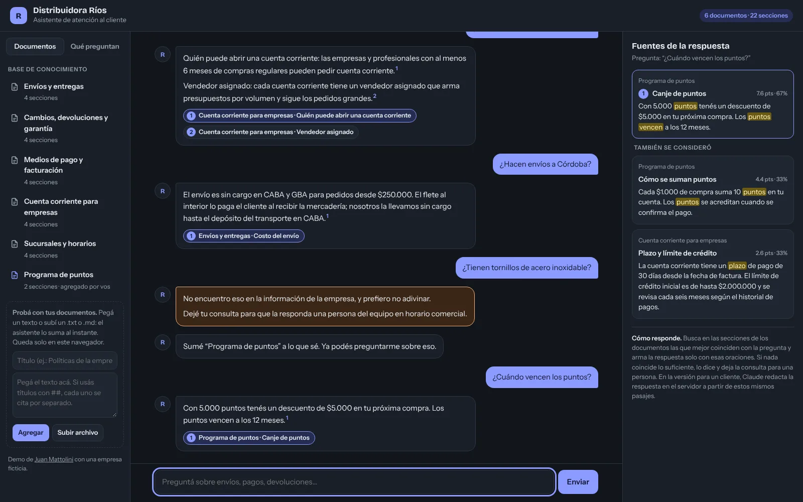

Respuestas con fuente
Cada respuesta se arma con las oraciones de las secciones que mejor coinciden con la pregunta, numeradas. Al tocar una cita se ve el pasaje completo.
Cuando dos secciones aportan, la respuesta dice de cuál sale cada parte.
Un chat de atención que responde con la información de la empresa (envíos, pagos, devoluciones, horarios) y muestra de qué documento sale cada respuesta. Si algo no está en los documentos lo dice, deja la consulta para una persona y lo anota para saber qué falta documentar. La demo usa una distribuidora ficticia y se le pueden sumar documentos propios.










Capturas de la demo con una empresa ficticia.
Cada respuesta se arma con las oraciones de las secciones que mejor coinciden con la pregunta, numeradas. Al tocar una cita se ve el pasaje completo.
Cuando dos secciones aportan, la respuesta dice de cuál sale cada parte.
Si la mejor coincidencia no alcanza un mínimo de puntaje y de palabras encontradas, el asistente no responde: avisa que no lo encuentra y deja la consulta para una persona.
"¿Cuánto tarda?", "se me rompió" o "¿abren el sábado?" se traducen a las palabras de los documentos con una lista de sinónimos y raíces en español, sin depender de tildes ni plurales.
Un resumen para el negocio: cuántas preguntas se respondieron, los temas más consultados y la lista de las que no tuvieron respuesta, para completar los documentos.
Se pega un texto o se sube un archivo .txt o .md. Si tiene títulos con ##, cada sección se busca y se cita por separado. En la demo queda solo en el navegador.
El panel de fuentes muestra el puntaje de cada sección y qué porcentaje de la pregunta encontró, además de las secciones que se consideraron y no se usaron.
La pregunta
La búsqueda
La respuesta
La IA no responde de memoria: recibe solo los pasajes encontrados y la instrucción de no salir de ellos. Así las respuestas se pueden verificar y no aparecen políticas inventadas.
Es mejor un "no lo sé" que una respuesta equivocada sobre plazos o devoluciones. El umbral combina el puntaje de la búsqueda y la proporción de la pregunta que se encontró.
Cada título del documento es una unidad que se busca y se cita. Las respuestas salen cortas y la cita lleva al párrafo exacto, no a un archivo de diez páginas.
Cada consulta que el asistente no pudo responder queda registrada. Es la lista de lo que los clientes preguntan y la empresa todavía no escribió.
En la versión para un negocio, la clave de Anthropic vive en una función de Supabase, con límite diario de consultas y registro de tokens para que el costo no se dispare.
Para que cualquiera la pruebe sin cuenta ni costo, la búsqueda y la respuesta corren en el navegador. Es la misma búsqueda que usa la versión con IA; cambia quién redacta.
Demo desarrollada en octubre de 2026.
¿Querés un asistente que responda con la información de tu negocio? Contame qué preguntan tus clientes.
mattolinijuansebastian@gmail.com